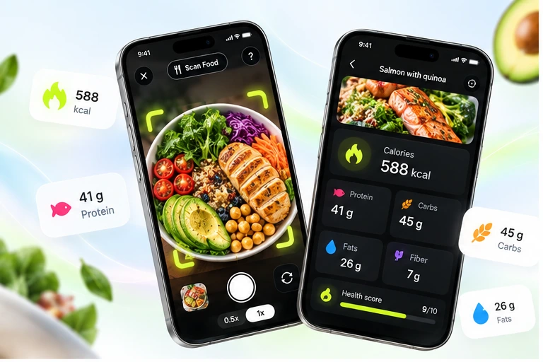
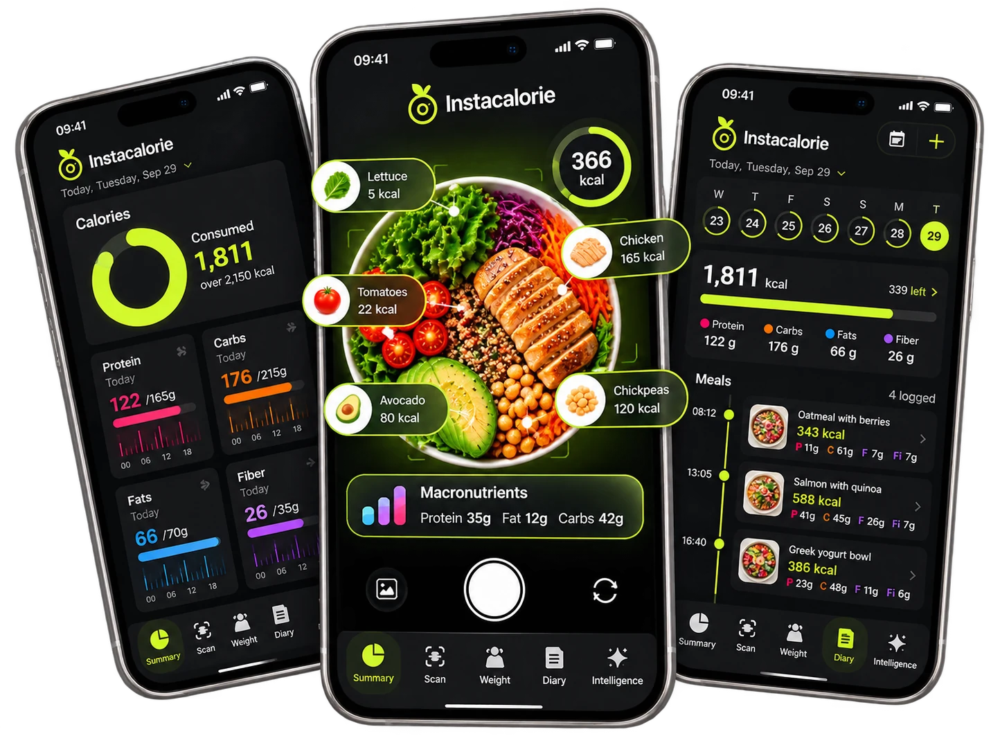
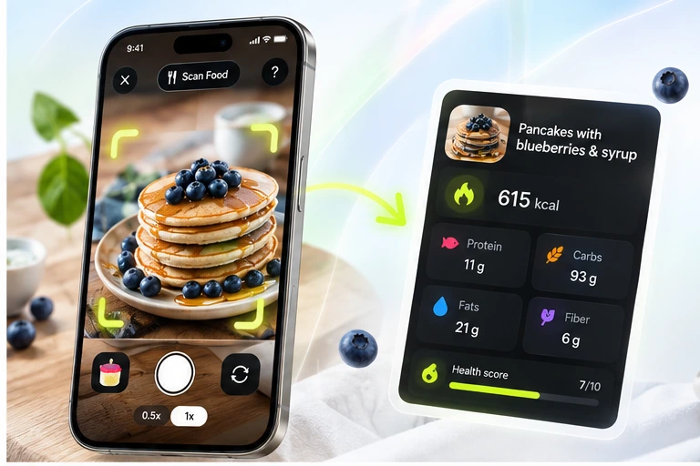
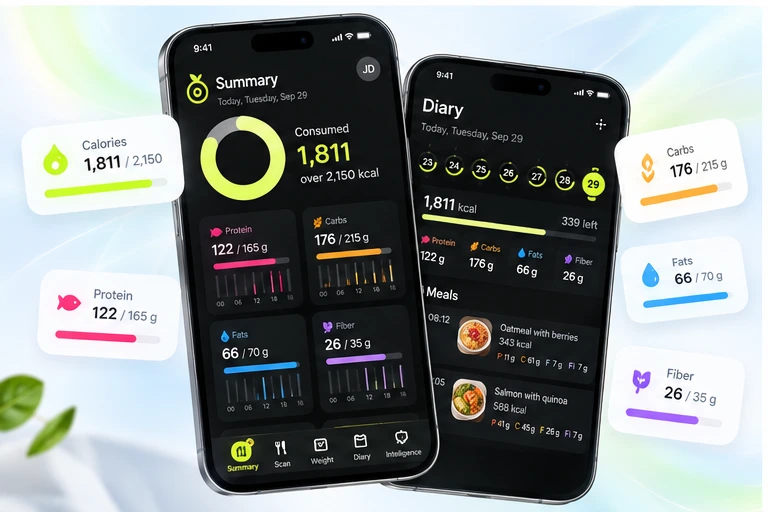
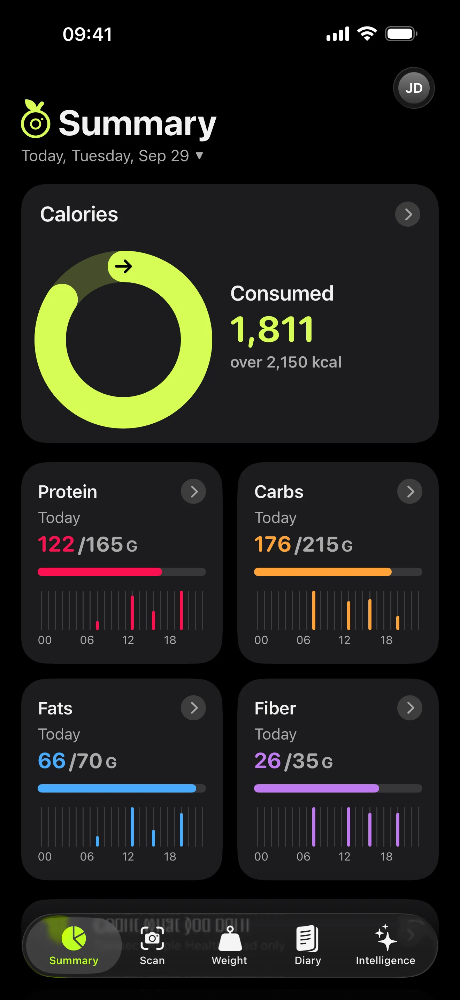
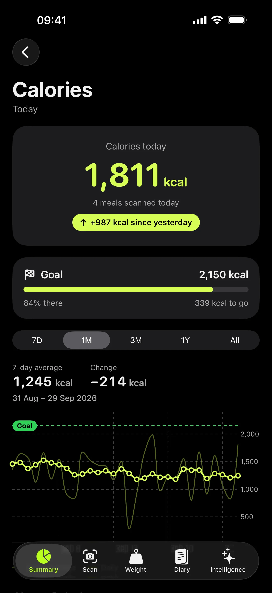
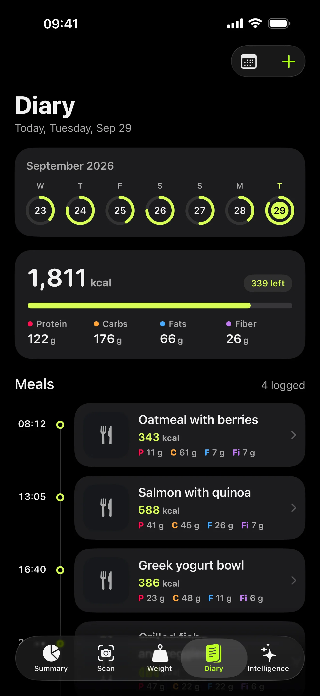
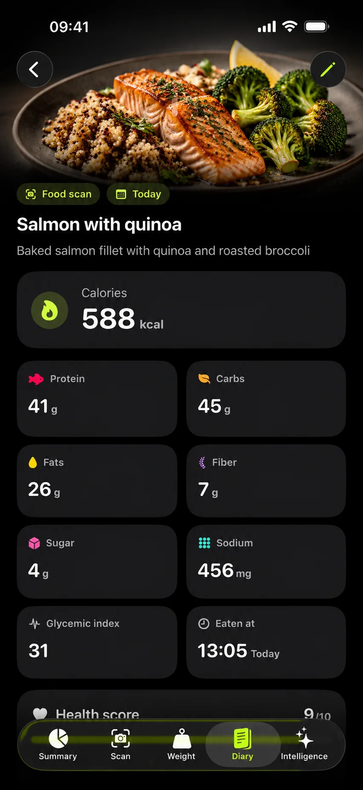
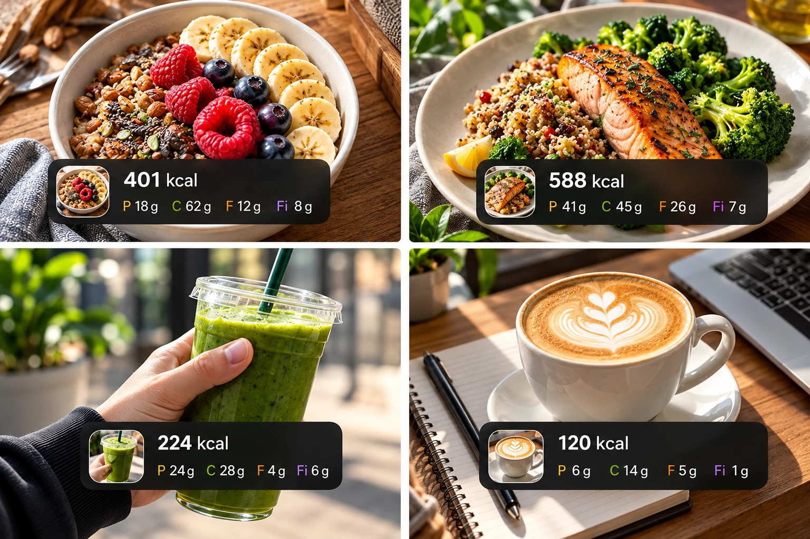

Snap
Open the camera and take one photo of your meal. That is the entire input.
Snap a photo of any meal. Instacalorie reads the calories, protein, fat, and carbs in seconds. No weighing, no searching, no guessing.


Open the camera and take one photo of your meal. That is the entire input.

AI identifies the food and returns calories plus protein, fat, carbs and fiber in seconds.

Every meal flows into your daily, weekly, and monthly totals automatically.





Home-cooked meals, restaurant plates, coffee, snacks and everything in between. Keep your nutrition visible without slowing down your day.
DownloadSnap a photo and get calories, protein, fat, carbs and more in seconds. Instacalorie is built for iPhone.
Download